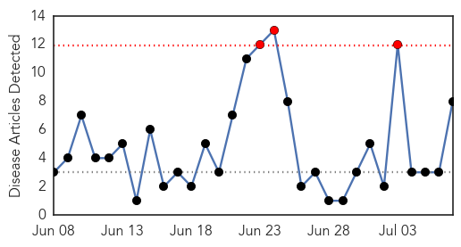

Hepatitis
30-Day Web Trend
2 alerts, 0 warnings
30-Day Twitter Trend
0 alerts, 0 warnings

Article Locations
Article Confidences

Top Articles:
Top Tweets:
-
No tweets found for Jul 07, 2015
Meningitis
30-Day Web Trend
3 alerts, 0 warnings

30-Day Twitter Trend
0 alerts, 0 warnings

Article Locations

Article Confidences

Top Articles:
- 0.997
- Saudi Arabia issues health guidelines for Umrah, Hajj visitors
- 0.969
- Quarantine rules for Haj pilgrims unveiled
- 0.919
- Say no to pig blood pudding, doctors advise as swine bacteria kill 4
- 0.787
- Romania Mulls Forcing Parents to Vaccinate Children
- 0.715
- Online News and Information Portal for Ghanaians In Diaspora
- 0.618
- Researchers awarded grant from British Council to reduce burden of infectious disease in Malaysia
- 0.610
- 2 die in Vietnam of swine bacteria after eating raw blood pudding — Talk Vietnam
- 0.552
- Swine bacteria kills man in northern Vietnam
Top Tweets:
-
No tweets found for Jul 07, 2015